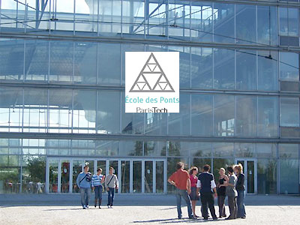

Paristechinois
1。简单介绍一下在pont是怎样找实习的（简单几句话就可以）以及毕业以后的parcours, 毕业后工作过的一些企业和在企业里所做过的工作
我在国内同济大学学得是交通规划与工程 and 地球信息系统。考虑到刚来的时候法语不是很好，而且我自己很喜欢搞交通与城市规划（个人兴趣很喜欢画画叶在初中学过1-2年），所以到ponts后选择在 Departement de Ville Transport Environnement读工程师课程。
读完第一年后，暑假就要做一个2个月或者一年的实习了。二月份我的一个校友在学校发了一个RATP的2个月的实习，我去面试也被录取了，心里一下放心了很多。但当Ponts绝大多数法国同学都在很紧张地找一年的长实习的时候，我也参加了很多学校组织的帮助学生找实习的conferences/Forums和一些模拟面试的atelier，我认识到对于ponts的专业来说，土木啊交通城市规划阿，金融（08经济危机，我09年初找实习），实习经验对将来找工作特别重要，尤其是在法国，找CDI的工作就像找到一个终生雇主一样（公司很难辞退员工的），因而公司在招人得时候非常谨慎，一般情况下，更倾向与找已经有较长实习经历的candidat（超过6个月，法国人工作节奏慢，少于6个月实习生一般都是打杂，很少能做一个完整的有趣的项目）. 于是我同时也开始找一年的长实习了，学校会发很多OFFEERS的，学校发的OFFER一般也都质量很好的，或者参加forum，学校组织的和公司见面的conferences，专业老师推荐的公司，还有找校友录里想去公司的校友（Ca depends, 有的校友会很gentil地回信，很多人也会杳无音信的。。。）还有也可以让一些中国师兄师姐帮忙投下简历地！
总之，把可能的机会都试试，ParisTech面的学生，尤其X, Mines, Ponts的学生一般都会受到很多面试机会的。后面就是准备面试，我们ponts学校有很多修改cv+Lm和simulation d'entretiens的Atelier,一对一的指导，非常有效！还有一些专题讲座？比如怎么Negocier salaire, etc。 我也听说forum上也可以注册simulaion d‘entretien的，但我从来没有试过，不知道效果如何。
所以面试了蛮多，结果是先在RATP做完2个月的短实习（那个校友非常gentil也学到了很多东西），然后在VEOLIA Transport做一年的市场开发的长实习，去了很多地方，感觉很长见识，工作很紧张的时候也学会怎么合理高效安排工作，碰到catascrophy怎么处理，以及学会了怎么和法国同事相处。但同时长实习也有弊端，有时候工作不多，公司工作节奏慢有点浪费时间，也见识到公司人事关系不简单的一面了。。。
后来长实系后，3年级我已经很明确自己喜欢做什么要在什么公司工作了，所以毕业实习我就定向地投简历到找我感兴趣的3-4家公司做毕业实习和工作了。我现在在一家做交通规划的私有公司工作（相当于国内的交通规划院），目前在做一些大型基础建设项目（TGV etc.)的经济影响分析。
我的经历和很多ponts的同学很相似的，希望有所帮助。写得很匆忙，像流水帐：“）还需要你改改，见谅。
2。 pont的学习生活给你的职业生涯带来了哪些帮助，以及你对pont中国毕业生就业的一些看法。
Ponts让我看到了法国人对数学物理基础学科的崇尚，以及法国人认真起来的也很谨慎。以及Ponts或者说整个PARIStech强大的校友网吧！
建议中国学生还是学金融能源或者工业届的应该比较好在法国找工作，还有就是中国在这个行业很重要的话，中国学生去应聘会比较有优势吧。最好不要做和他们政府打交道的行业，共有行业对一个外国人来说很难。
作者简介:
晓乐
晓乐谈实习和工作

2012年5月10日星期四